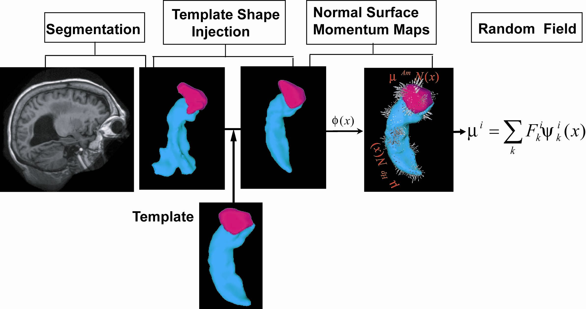
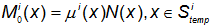
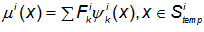
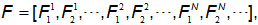
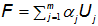
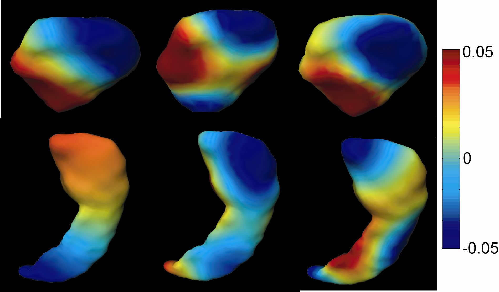

-
1.Atlases
We delivered five in vivo T2-weighted mouse brain images with structural labels. 39 structures (Table 1) were manually identified on every image based on the mouse brain histology atlas in stereotaxic coordinates by Franklin and Paxinos. The manually delineation was mainly operated on the axial view. However, some structures which are easily identifiable in the coronal or sagittal views were first delineated in these views before refining the delineation in the axial view. After all the structures were labeled for the first time, repeated revisions were done so as to ensure (1) all the voxels of the image containing brain tissue are labeled, (2) the relative sizes and locations of the structures in the axial view are similar to that of the histology atlas and (3) the structure boundaries appear as smooth as possible in all the three views. In the following, we described the delineation protocol for each structure, accompanied by a figure showing the respective delineation. The cursors in the figures point to the position of the structure being delineated in that step. The work was written in Bai et al. (2012)[1].
2.LDDMM Brain Imaging Mapping Toolbox
LDDMM Brain Imaging Mapping Toolbox
3. Multiple Subcortical Shape Analysis
MR-based morphometric assessment of the human brain has been widely employed in neuroimaging studies. Compared to volumetric assessments of the brain, the patterns of anatomical shape abnormalities provide richer information to distinguish diseases. It has thus become an attractive research area in the field of medical image analysis. A subcortical shape analysis pipeline under the large deformation diffeomorphic metric mapping (LDDMM) framework aims at assessing the anatomical connectivity of the multiple subcortical structures on the basis of shape expansion or compression. As illustrated in Figure 1, the pipeline includes volume-based tissue segmentation, template shape injection, normal surface momentum maps, and random field modeling.
Figure 1. Schematic of the multi-structure shape analysis pipeline.
Volume-Based Subcortical Segmentation
We automatically delineated the subcortical structures from the intensity-inhomogeneity corrected T1-weighted MR images using a Markov random field model that incorporates the subcortical anatomical definition as prior. The Markov random field model was first applied to label each voxel in the image volume as gray matter, or white matter, or CSF, or subcortical structures . Due to no constraints of structural shapes, this process introduced unsmoothness and topological errors (e.g. holes) on the structural boundary. This may increase shape variation and thus reduce statistical power to detect group difference in shape as examples illustrated in Figure 2(a,b,e,f).

Figure 2. Examples of template shape injection
Parametric Shape Encoding via Normal Surface Momentum Maps
For homogeneous subcortical subvolumes the representation of shapes can be reduced to a representation of scalar fields that are concentrated on the boundary of the different homogeneous subvolumes. These scalar fields indexed over the bounding surface determine the "momentum" of the LDDMM mapped template shapes into the population and become the variables for encoding the shape variation of the homogeneous subvolumes. This parametric reduction follows from two key properties of the geodesic connection of the template to the target under LDDMM: 1) the conservation of the momentum property, and 2) the normality property. We can thus write the initial momentum as:.
Random Field Modeling of the Momentum Maps
A hierarchical statistical analysis is examined by first building random fields within each subcortical structure based on its geometry and then reducing the data dimensionality via principal component analysis (PCA) for expressing the correlation pattern of shape variations in the multiple subcortical structures in order to identify anatomical connectivity between regions on the basis of similar shape change pattern (e.g. compression or expansion). In the first level, the scalar momentum is modeled as a linear combination of the Laplace-Beltrami (LB) bases on the template surface in the form of.
The examples of the LB bases on the amygdala and hippocampus are shown in Figure 3.
In the second level, a shape vector, is constructed. Principal component analysis (PCA) is used to model the shape correlation of the multiple subcortical structures through the shape vector: i.e..
Figure 3. Examples of the Laplace-Beltrami basis functions on the amygdala (top row) and the hippocampus (bottom row). From the left to right, panels respectively show the second, fifth, and seventh basis functions.
References:
Methodological Papers:
- 1.Anqi Qiu*, Annie Lee, Mingzhen Tan, Moo K. Chung, “Manifold Learning on Brain Functional Networks in Aging ”,Medical Image Analysis, 20(1):52-60, 2015.
- 2.Anqi Qiu, Timothy Brown, Bruce Fischl, Jun Ma, Michael I. Miller, "Atlas Generation of Subcortical and Ventricular Structures with its Applications in Shape Analysis", IEEE transactions on Image Processing, accepted.
Applications in Neuropsychiatric and Neurodegenerative Diseases:
- 1.Anqi Qiu, Christine Fennema Notestine, Anders M. Dale, Michael I. Miller, and the Alzheimer's Disease Neuroimaging Initiative, "Regional Shape Abnormalities in Mild Cognitive Impairment and Alzheimer's Disease", NeuroImage, 45:656-661, 2009.
- 2.Anqi Qiu, Warren D. Taylor, Zheen Zhao, James R. MacFall, Michael I. Miller, David C. Steffens, K. Ranga R. Krishnan, "APOE Related Hippocampal Shape Alteration in Geriatric Depression", NeuroImage, 44:620-626, 2009.
- 3.Anqi Qiu, Deana Crocetti, Marcy Adler, Mark Mahone, Martha Deckla, Michael I. Miller, and Stewart H. Mostofsy, "Basal ganglia volume and shape in children with ADHD", Am J Psychiatry, 166:74-82, 2009. [FEATURE PAPER]
- 4.Anqi Qiu, Jidan Zhong, Steven Graham, Ming Ying Chia, Kang Sim, " Combined analyses of thalamic volume, shape, and white matter integrity in first-episode schizophrenia", NeuroImage, 47:1163-1171, 2009.